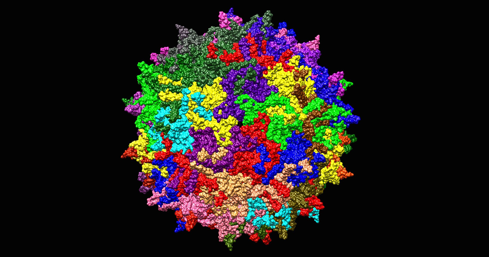

A gene therapy arrives as a vector. The body has no category for that. What reaches the bloodstream is a protein shell around 25 nanometres across with a single strand of DNA folded inside, assembled from the same genes a wild virus uses, and the receptors that meet it evolved to find exactly that shape. They cannot read intent.
Four arms of the immune system answer. They read three different things: the capsid shell, the DNA folded inside it, and the protein that DNA goes on to make. The shell is read twice — intact from the outside, and again in fragments from the inside, after a cell has taken a particle up and broken it apart. Which arm dominates decides whether enough genomes reach a nucleus, whether the patient’s liver enzymes climb in week three, and whether a second dose is ever possible.
1 Recombinant AAV
Adeno-associated virus is a small, non-enveloped parvovirus. It carries about 4.7 kilobases of single-stranded DNA and cannot copy itself without a helper virus. In the wild it causes no known disease, which is most of why it became the delivery vehicle for in-vivo gene therapy.
A recombinant AAV — rAAV — keeps the shell and throws away the contents:
- The capsid is unchanged. Sixty copies of three related proteins, VP1, VP2 and VP3, packed into an icosahedron. This is the part the therapy needs, because the outside of the shell is what picks which tissue the particle enters.
- The genome is replaced. Everything between the two inverted terminal repeats — the short hairpin sequences at each end that mark where packaging starts and stops — is swapped for a promoter and the therapeutic gene.
- The particle is replication-defective. The genes for making more virus are gone, so a transduced cell produces the therapeutic protein and no progeny virus.
Two features of that construction matter to the immune system, and neither is a design choice anyone would make freely.
- The shell is a viral protein whether or not it carries viral genes. Around 30 to 60 percent of adults carry antibodies against common serotypes such as AAV2 from ordinary childhood exposure, and those antibodies bind a therapeutic capsid exactly as well.
- The cargo is unmethylated bacterial-style DNA. Plasmid DNA grown in E. coli is rich in CpG dinucleotides that the mammalian genome has largely lost, and the manufacturing process leaves that signature in the packaged genome.
2 What the host can sense
The four responses look like four separate topics. They collapse to one question — which part of the particle is exposed, and when.
Innate sensing
Sensor TLR2 on the cell surface, TLR9 inside the endosome
Clock Minutes to hours
Antibodies
Sensor Neutralising antibody blocks entry, binding antibody opsonises
Clock Any time, and for years afterwards
CD8+ T cells
Sensor Capsid peptides displayed on MHC class I
Clock Four to eight weeks
Complement
Sensor C3 settling on the capsid surface, then the cascade
Clock Minutes
These four colours carry through every figure and through the widget’s four switches.
| Exposed | Where | Sensor | Arm |
|---|---|---|---|
| Capsid, outside surface | Blood, cell surface | Pre-existing antibody, TLR2, complement C3 | Humoral, innate, complement |
| Capsid ssDNA, unmethylated CpG | Endosome, during uncoating | TLR9 | Innate |
| Capsid peptides | Cell surface, on MHC class I | CD8\(^+\) T cell receptor | Cellular |
| Transgene product | Cell surface, on MHC class I | CD8\(^+\) T cell receptor | Cellular |
Reading the table down is reading the route. The shell is exposed first and is sensed first; the DNA is exposed only after the particle is inside a compartment where it can begin to open; the peptides appear only after a capsid has been broken up, which takes hours, and the T cells that recognise them take days to weeks to expand.
3 Timing
- Minutes. Complement activation and TLR2 engagement. Both act on the intact particle in circulation, so both scale directly with how many particles are in circulation.
- Hours. TLR9 sensing inside the endosome, and the type I interferon response it drives. The particle has to be taken up first.
- Days. Innate signalling licenses antigen-presenting cells, which prime naive T cells.
- Weeks. Capsid-specific CD8\(^+\) T cells expand and kill transduced cells. This is the arm that takes away expression the patient already had.
- Any time. Pre-existing neutralising antibodies act before the first two, and a post-dose antibody response closes the door on a second administration for years.
4 The route
Six barriers stand between the syringe and a working episome. Each removes a fraction of the dose. The widget runs that attrition as an explicit chain: switch an arm on, and the particles it removes drop out at the station where that arm acts.
Things to try, and what each should show:
- Turn everything off. About one genome in thirteen reaches a nucleus — 7.6% of the dose. Almost all of that loss is trafficking, not immunity. The endosome is the single most expensive step, with entry across the plasma membrane and the race against the proteasome close behind, and all three are expensive in a patient with no response to the vector at all.
- Turn on antibodies with the titre at 1:1000. The figure falls to 0.15%, about one genome in 660. Almost the whole dose goes before a particle is ever inside a cell: opsonised capsids cleared at the sinusoid, then neutralising antibody blocking entry at the cell surface. The inflammatory lamps stay dark, because the particles never got far enough to be sensed from inside.
- Turn on CD8\(^+\) T cells alone. The nucleus count does not move at all. Expression at week 8 falls to 44 anyway. This arm does not stop delivery; it removes the cells that already received it.
- Turn on complement and drag the dose from \(10^{13}\) to \(10^{14}\) vg/kg. The share reaching a nucleus falls from 5.4% to 4.0% while the genomes delivered rise roughly sevenfold, and the complement lamp goes from amber to red. Both halves of the dose problem are in one picture.
7.6%Reaches a nucleusNo response running, 1013 vg/kg
0.15%At a titre of 1:1000About one genome in 660
30–60%Of adults are seropositiveFrom ordinary childhood exposure
4–8 wkALT and AST riseWhen CD8+ T cells find the cells
4.1 Model
The numbers are synthetic and illustrative. They are not fitted to any trial, and no patient produced them.
The generating process is a product of survival fractions, one per station:
\[ N_{\text{nucleus}} = N_0 \prod_{s=1}^{6} p_s(\text{dose},\ \text{titre},\ \text{arms on}). \]
Each \(p_s\) is a baseline trafficking fraction multiplied by a penalty for whichever arms act at station \(s\). The baselines are set so a seronegative patient with no active response lands at 7.6% of the dose reaching a nucleus, the right order for the few percent that reach target-cell nuclei in practice, and the dose and titre terms move in the direction the literature reports. Expression at week 8 multiplies the nucleus count by a T-cell survival term.
What it stands in for: a single intravenous, liver-directed dose in an adult. It is a teaching device for the ordering and coupling of the four arms — which one acts where, and what happens when two act together. It is not a predictor of any individual outcome.
5 Innate sensing
Minutes to hours
Toll-like receptors are pattern receptors: each one binds a molecular shape that is common in pathogens and rare in the host, and converts binding into a signalling cascade. Two of them see AAV, at different places, and they drive different cytokines.
5.1 TLR2
TLR2 sits on the cell surface, and on the endosomal membrane, and binds the structural capsid proteins of the intact particle. Human endothelial cells and Kupffer cells — the resident macrophages lining the liver’s blood channels — carry it, which puts it exactly where an intravenous dose goes first.
Binding recruits MyD88, an adaptor protein, which activates the transcription factor NF-\(\kappa\)B. NF-\(\kappa\)B turns on the pro-inflammatory cytokine genes: TNF-\(\alpha\), IL-6 and IL-1\(\beta\). The consequence is a general inflammatory alarm, raised by the outside of the particle, with no reference to what the particle carries.
5.2 TLR9
TLR9 is inside the endosome, facing the compartment’s interior, and it binds unmethylated CpG dinucleotides in single-stranded DNA. That is a bacterial and viral signature: the mammalian genome depletes CpG and methylates most of what is left, so unmethylated CpG in an endosome means something foreign has begun to open.
- The capsid must start uncoating for the DNA to become visible. TLR9 sensing therefore lags TLR2 sensing, and it reports on particles that got at least as far as an endosome.
- Signalling goes through MyD88 again, but in plasmacytoid dendritic cells it branches to IRF7 and drives type I interferons, IFN-\(\alpha\) and IFN-\(\beta\), at high levels.
- Interferon does two things at once. It suppresses transgene expression directly, and it matures the antigen-presenting cells that go on to prime the T-cell response. The innate arm is what licenses the adaptive one.
CpG content is a manufacturing variable, not a fixed property of the vector. Codon choices and regulatory sequences can be redesigned to strip CpG motifs out of the expression cassette without changing the protein, and CpG-depleted vectors are one of the levers the field pulls on this response.
6 Antibodies
Any time, and for years afterwards
B cells make antibodies against the capsid — often long before the therapy, from ordinary exposure to wild AAV. They act on the particle while it is still outside a cell, and they split into two functionally different classes.
6.1 Neutralising antibodies
Neutralising antibodies bind the outer surface of the capsid at or near the sites the particle uses to attach. The blocking is steric — the antibody is physically in the way of the glycan the capsid binds and of AAVR, the receptor that carries it into the cell. The particle is intact and undamaged and simply cannot dock.
- Neutralisation is close to all-or-nothing at the level of a single particle, so titre translates into dose loss steeply.
- Titres are reported as the reciprocal dilution at which neutralisation is still measurable, so 1:1000 is a high titre and 1:5 is a low one. Many trials exclude patients above a threshold as low as 1:5, because a small amount of circulating antibody removes a large fraction of the dose.
- This is the reason a second dose usually fails. The first dose raises a durable neutralising response against the capsid it was delivered in, and re-dosing with the same serotype years later meets a titre far above any enrolment threshold.
6.2 Binding antibodies
Binding antibodies attach to the capsid without covering a receptor site. The particle could still dock, but it does not get the chance: the antibody’s Fc tail is now sticking out, and Fc\(\gamma\) receptors on macrophages and Kupffer cells grip it.
The effect is opsonisation — coating a particle to mark it for eating. A capsid tagged this way is pulled into a phagocyte and degraded. The dose is cleared from circulation faster, and the liver’s resident macrophages do most of that clearing, which is one reason an intravenous dose is a liver problem before it is anything else.
An assay that only measures neutralisation misses this entirely. A patient can be seronegative by a neutralisation assay and still clear a dose quickly through binding antibodies alone. Total-antibody assays are run alongside for that reason.
7 Capsid-specific T cells
Four to eight weeks
The first three arms act on the particle. This one acts on the patient’s own cells, and it is the arm that takes away expression that was already working.
The chain has four links, and the first one is a trafficking failure rather than an immune event:
- A capsid fails to reach the nucleus. Most do. It is tagged with ubiquitin and fed to the proteasome, the cell’s general-purpose protein shredder.
- The proteasome cuts it into short peptides. These are the ordinary raw material of the class I presentation pathway — every cell continuously advertises samples of its own protein contents this way.
- Peptides are loaded onto MHC class I and displayed on the cell surface. A hepatocyte that took up a vector is now showing capsid fragments to anything that walks past.
- A capsid-specific CD8\(^+\) T cell recognises the complex and releases perforin, which opens the target membrane, and granzymes, which enter and trigger apoptosis.
The observable signature is specific and well documented: a rise in the liver enzymes ALT and AST at roughly four to eight weeks after infusion, coinciding with a fall in transgene expression. It looks like liver toxicity and it is really the immune system finding cells that took up the dose. Prophylactic corticosteroids, started before the enzymes rise, are the standard countermeasure, and their timing is set by that four-to-eight-week window.
Two points are easy to get backwards.
- The antigen is usually the capsid, not the transgene. The capsid arrived by the thousand per cell and is presented immediately; the transgene product is a protein the patient may already be tolerant to. A transgene-directed response does happen, and it matters most when the patient’s own gene is deleted, so the therapeutic protein is foreign to them in the way a viral protein is.
- The dose is already delivered when this arm acts. Steroids cannot recover killed cells. They prevent the killing of cells that are still expressing.
8 Complement
Minutes
Complement is a cascade of plasma proteins that amplifies: a small trigger cleaves a protein, the fragments cleave more, and the output climbs steeply with input. Both the classical pathway, triggered by antibody bound to a capsid, and the alternative pathway, which turns over continuously and settles on surfaces, activate on AAV.
The cascade produces two kinds of output, and they cause different problems.
- Anaphylatoxins. Cleaving C3 and C5 releases the small fragments C3a and C5a into the plasma. These recruit and activate neutrophils and mast cells and drive systemic inflammation. This is the fast, whole-body reaction, and it is the one that follows an infusion within hours.
- The membrane attack complex. The larger fragments assemble C5b-9, a ring that inserts into a lipid membrane and opens a pore. On vascular endothelial cells, that damage exposes the surfaces that start clotting, and the clinical consequence is microvascular thrombosis with falling platelets — the picture reported as thrombotic microangiopathy after high-dose systemic AAV.
Complement is the arm most tightly coupled to dose, for two reasons that compound. The cascade is an amplifier, so it responds non-linearly to how much surface is presented to it; and circulating antibody-capsid complexes trigger the classical pathway, so a patient with any pre-existing titre starts the cascade with a much lower threshold. Dose and serostatus are not independent risks.
9 Dose
Every arm is dose-sensitive, and none is dose-sensitive in the same way.
| Arm | What rises with dose | Shape |
|---|---|---|
| Complement | Surface presented to an amplifying cascade | Steeply non-linear |
| TLR2, TLR9 | Particles sensed per cell | Roughly proportional |
| Antibody clearance | Saturates once titre is exhausted | Flattens at high dose |
| CD8\(^+\) T cells | Capsid peptides displayed per cell | Proportional, then a threshold for killing |
The trap is that the reason to raise the dose and the reason not to are the same number. Delivery is inefficient, so a therapeutic effect needs a large dose; a large dose is what turns the amplifying arms on. Systemic doses in the \(10^{13}\) to \(10^{14}\) vg/kg range are where the severe complement and liver events have been reported, and they are also where enough genomes arrive for some indications to work at all.
10 Clinical signatures
Each arm shows up as something a clinician measures, on its own clock. Reading backwards from the observation to the mechanism is most of how these events are managed.
| Observation | Timing | Arm |
|---|---|---|
| Fever, raised IL-6 and TNF-\(\alpha\) | Hours | TLR2, innate |
| Raised type I interferon signature | Hours to days | TLR9, innate |
| Falling platelets, haemolysis, renal impairment | Hours to days | Complement, MAC |
| No expression at all despite a full dose | Immediate | Pre-existing neutralising antibody |
| ALT and AST rise with falling expression | 4 to 8 weeks | Capsid-specific CD8\(^+\) T cells |
| Second dose has no effect | Years | Post-dose neutralising antibody |
The countermeasures line up with the same table: pre-screening for neutralising titre before enrolment, CpG depletion in cassette design, prophylactic corticosteroids over the T-cell window, and complement inhibition where the cascade is the presenting problem.
11 Constraints
- The four arms are not independent. Innate signalling licenses the adaptive response, antibody-capsid complexes trigger complement, and complement fragments opsonise capsids for the same phagocytes that binding antibodies recruit. The widget treats the arms as separable because that is what makes the ordering visible, and the separability is the simplification.
- Serotype changes the numbers, not the mechanisms. AAV8 and AAV9 differ from AAV2 in tropism, in seroprevalence, and in how strongly each arm engages. The route is the same.
- Route of administration changes the exposure. Delivery to the eye, the central nervous system or a single muscle presents far less capsid to the circulation than an intravenous dose, and the complement and antibody arms weaken accordingly.
- Preclinical models under-report this. Mice have different TLR9 distribution and different complement handling from humans, and no colony has the pre-existing anti-AAV antibody that a third to a half of adult patients arrive with.
Shell. Sensed. DNA. Sensed. Peptides. Presented. Dose. Amplifies. Screen. Titre. First.
12 References
- Manno, C. S. et al. (2006). Successful transduction of liver in hemophilia by AAV-Factor IX and limitations imposed by the host immune response. Nature Medicine. The trial that identified the capsid-specific CD8\(^+\) T-cell response and the ALT rise.
- Zhu, J., Huang, X. and Yang, Y. (2009). The TLR9-MyD88 pathway is critical for adaptive immune responses to adeno-associated virus gene therapy vectors in mice. Journal of Clinical Investigation. The CpG-TLR9 link.
- Faust, S. M. et al. (2013). CpG-depleted adeno-associated virus vectors evade immune detection. Journal of Clinical Investigation. CpG content as a manufacturing lever.
- Hösel, M. et al. (2012). Toll-like receptor 2-mediated innate immune response in human nonparenchymal liver cells toward adeno-associated viral vectors. Hepatology. TLR2 sensing of the capsid.
- Pillay, S. et al. (2016). An essential receptor for adeno-associated virus infection. Nature. Identification of AAVR, the entry receptor neutralising antibodies block access to.
- Mingozzi, F. and High, K. A. (2013). Immune responses to AAV vectors: overcoming barriers to successful gene therapy. Blood. Review covering the humoral and cellular arms together.
- Verdera, H. C., Kuranda, K. and Mingozzi, F. (2020). AAV vector immunogenicity in humans: a long journey to successful gene transfer. Molecular Therapy. Clinical synthesis, including complement and dose.